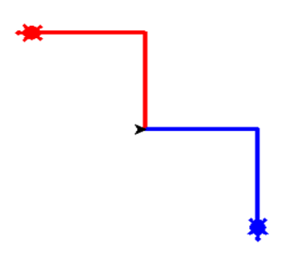

7. Multiple turtle - Intances.
You will have to complete 1 task in this chapter.
In a Python program, we can have as many turtles as we want. More turtles may complete the tasks faster. Each turtle is called an instance. Each turtle will have its own attributes and functions, which means it will work separately from the other turtles. It will only do the tasks that are assigned for itself. For example, there are 2 turtles, one is named A, the other is named B. A might draw with a thin black pen and be at some position, while B might be going in her own direction with a fat pink pen.
Please look at the video first to see how to set up multiple turtle
from browser import document
import turtle
turtle.set_defaults(
turtle_canvas_wrapper = document['turtle-div'])
# DO NOT DELETE ABOVE THIS LINE
######## Write your code below
B = turtle.Turtle()
B.shape("turtle")
B.color("hotpink")
B.pensize(5)
B.speed(2)
A = turtle.Turtle()
A.shape("turtle")
A.color("blue")
A.speed(2)
for i in range(3):
B.forward(80)
B.left(120)
B.right(180)
B.forward(80)
for i in range(4):
A.forward(50)
A.left(90)
# DO NOT DELETE BELOW THIS LINE
turtle.done()
Task: Draw a shape that looks exactly like the image below. The color of each turtle depends on you.
Reminder: Through the first few chapters, you should have become familiar with the turtle’s default direction and some common commands. Here are some of the commands and techniques that you have learnt.
| Purpose | Command |
|---|---|
| Import Python turtle graphic. | import turtle |
| Create a name for your turtle. | name = turtle.Turtle() |
| Choosing a shape.
if you skip the command choosing a shape for your turtle then your turtle shape will automatically be an arrow. |
name.shape(‘shape’)
You have to replace ‘shape’ by one of these shapes: arrow, circle, square, triangle or turtle. |
| Choosing a color
if you skip the command choosing a color for your turtle then your turtle color will automatically be black. |
name.color(‘color’)
You have to replace ‘color’ by the color that you wish to. |
| Setting a default location to (0,0) | name.goto(0,0) |
| Setting a
background
If you don’t want to have background image for your turtle, please skip this part. |
|
| Call the screen function. | screen=turtle.Screen(). |
| Set background to the picture that you like. | screen.bgpic(“picture_file”)
Click to the image icon and look at 3 images that it contains. Replace ‘picture_file’ with the image file that you like. |
| Movement commands | |
| Make the turtle goes forward in the current direction. | turtle.forward(steps) |
| Turns the turtle to the left direction in number degrees. | turtle.left(degrees) |
| Turns the turtle to the right direction in number degrees. | turtle.right(degrees) |
| Pointing a variable to an object. | variable = object
The object can be in any type: integer, decimal, list, etc. |
| Setting turtle pen to a color | turtle. pencolor('color')
Replace ‘color’ by a color that you want. |
| The general while loop is: n = a while n < c: code chunk n = n + b |
The general for loop is: for i inrange(i): code chunk |
Instructions:
- The black arrow is your turtle default location.
- Create the red turtle.
- Create the green turtle.
- Pick a length to draw all the lines. The length should be smaller than 100 and larger than 50
The 2 turtles must have different names. - Draw the red part of the shape by using the red turtle:
- Write a for loop that repeats the 2 lines of code below for 2 times:
- Turn your turtle to the left for 90 degrees.
- Make your turtle go forward by the length you have chosen.
- Draw the blue part of the shape by using the blue turtle:
- Write a for loop that repeats the 2 lines of code below for 2 times:
- Make your turtle go forward by the length you have chosen.
- Turn your turtle to the right for 90 degrees.
blue = turtle.Turtle()
blue.shape("turtle")
blue.color("blue")
blue.penzise(5)
blue.forward(50)
blue.right(90)
blue.forward(50)
red = turtle.Turtle()
red.shape("turtle")
red.color("red")
red.left(90)
red.forward(50)
blue.left(90)
blue.forward(50)
from browser import document
import turtle
turtle.set_defaults(
turtle_canvas_wrapper = document['turtle-div1'])
# DO NOT DELETE ABOVE THIS LINE
######## Write your code below
name = turtle.Turtle()
name.shape("turtle")
name.color("red")
# DO NOT DELETE BELOW THIS LINE
turtle.done()
« Previous Next »